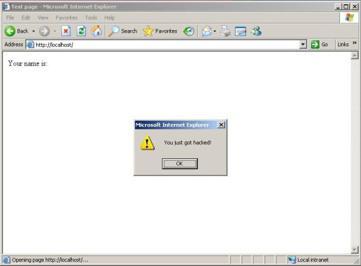

Обеспечение безопасности кода
Разрабатывать безопасный код не всегда так просто, как кажется. Для этого нужны не просто опытные программисты — также требуются знания о конкретных проблемах безопасности. Разработке безопасного кода посвящены многие книги, поэтому здесь рассматриваются только основы.
- Глобальные переменные всегда следует отключать, поскольку их можно намеренно инициализировать с помощью подложного запроса GET или POST.
- Сообщения об ошибках следует отключить; вместо них следует использовать запись сведений об ошибках в лог-файл, поскольку подобная информация может дать злоумышленникам возможность спровоцировать аналогичную проблему и использовать ее для поиска других уязвимостей.
- Не следует считать надежными данные, поступающие от пользователей; для удаления специальных символов SQL и escape-последовательностей необходимо использовать функции фильтрации.
SQL-инъекция
SQL-инъекция используется для атаки веб-сайтов, работающих с базами данных. Возможность внедрения SQL-кода возникает, если в SQL-запросах используются неотфильтрованные данные, вводимые пользователями.
SQL-запросы используются для извлечения информации из базы данных, добавления информации в базу данных, а также для изменения и удаления данных в базе. Многие современные веб-сайты используют скрипты и SQL для динамического формирования содержимого страницы. В SQL-запросах часто используются данные, вводимые пользователями; это может привести к угрозе безопасности, поскольку хакеры могут попытаться внедрить во входные данные вредоносный SQL-код. Без надлежащих мер защиты такой код может быть успешно выполнен на сервере.
Рассмотрим следующий PHP-код:
$firstname = $_POST["firstname"]; mysql_query("SELECT * FROM users WHERE first_name='$firstname'");
После того, как пользователь введет свое имя в веб-форме, SQL-запрос вернет список всех пользователей с тем же именем. Если указать в форме имя «Крис», то SQL-запрос будет иметь следующий вид:
"SELECT * FROM users WHERE first_name='Chris'"
Это допустимая конструкция, которая сработает так, как ожидается. Но что случится, если вместо имени ввести, например, «'; drop table; #»? Тогда конструкция будет выглядеть следующим образом:
"SELECT * FROM users WHERE first_name=''; DROP TABLE users; #'"
Точка с запятой позволяет выполнять несколько следующих друг за другом команд. В результате простая SQL-команда превращается в сложную трехсоставную конструкцию:
SELECT * FROM users WHERE first_name='';
Исходная инструкция теперь бесполезна — ее можно пропустить. Вторая инструкция приведет к тому, что в базе данных будет целиком удалена соответствующая таблица, а стоящий в третьей строке символ «#» приведет к тому, что MySQL проигнорирует оставшуюся часть строки.
Приведенная в примере уязвимость особенно опасна, поскольку ее можно использовать для вывода закрытых данных, изменения отдельных полей или удаления информации. Некоторые СУБД также позволяют выполнять системные команды с помощью SQL.
К счастью, этот вид угрозы легко устраним благодаря проверке вводимых пользователем данных. В PHP имеется специальная функция mysql_real_escape_string, удаляющая из строки потенциальный код SQL-инъекции. Ее следует использовать для фильтрации всех данных, внедряемых в SQL-инструкции.
XSS (межсайтовый скриптинг)
Данный вид атак направлен на веб-сайты, отображающие вводимые пользователями данные. Вместо попытки получения контроля над базой данных путем ввода вредоносного кода злоумышленник пытается атаковать код самого веб-сайта, внедряя в него вредоносные сегменты.
Многие сайты хранят имена всех посетителей в базе данных, чтобы иметь возможность отображать их при вводе соответствующих пользователей. Злоумышленник может создать подложную учетную запись, разместив при этом в поле имени вредоносный код. Подобные атаки обычно реализуются с помощью вредоносных скриптов на языке Javascript, которые затем загружают контент с другого веб-сайта. Предполагается, что в базе данных хранится имя пользователя, но на самом деле в данном случае это будет вредоносный код. Соответственно, если веб-сайт отображает имя пользователя в верхней части страницы, то этот код будет выполнен. Поскольку при наличии определенных условий такой код может делать практически все, что угодно, угроза становится вполне реальной; тем не менее, разработчики зачастую про нее забывают.
Рассмотрим следующий PHP-код:
$firstname = $_POST["firstname"]; echo "Your name: $firstname";
После ввода имени в веб-форме сайт отображает на странице соответствующее сообщение. Если указать в форме имя «Chris», то сообщение будет иметь следующий вид: «Your name: Chris».
Что произойдет? Если вместо имени ввести следующую конструкцию:
«<script>alert („You just got hacked!“) ;</script>»

К сожалению, XSS-атакам зачастую трудно что-либо противопоставить, поскольку для этого необходимо должным образом фильтровать вводимые и выводимые данные, а также все поля, которые могут меняться пользователями. Сюда относятся данные, получаемые из запросов GET и POST, а также запросы, возвращаемые из базы данных.
В PHP имеется целый ряд пакетов, которые помогают фильтровать выводимые данные, например, CodeIgniter. Также в PHP имеется встроенная функция htmlspecialchars, которую можно использовать для фильтрации выводимых данных.